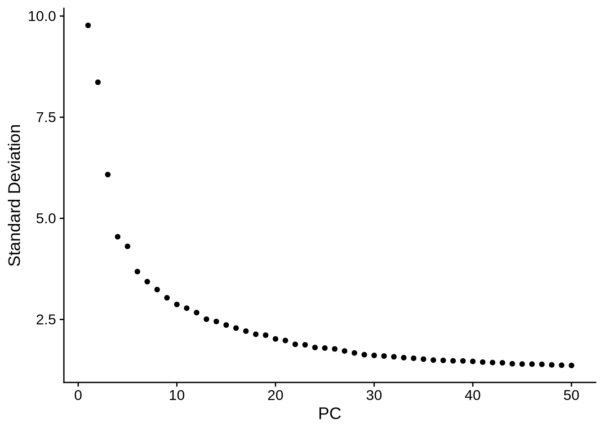
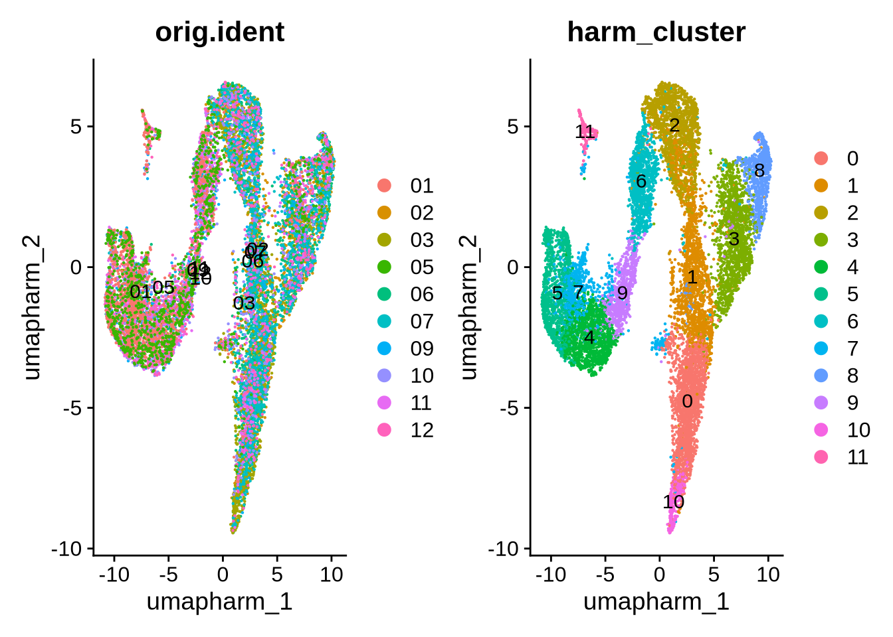
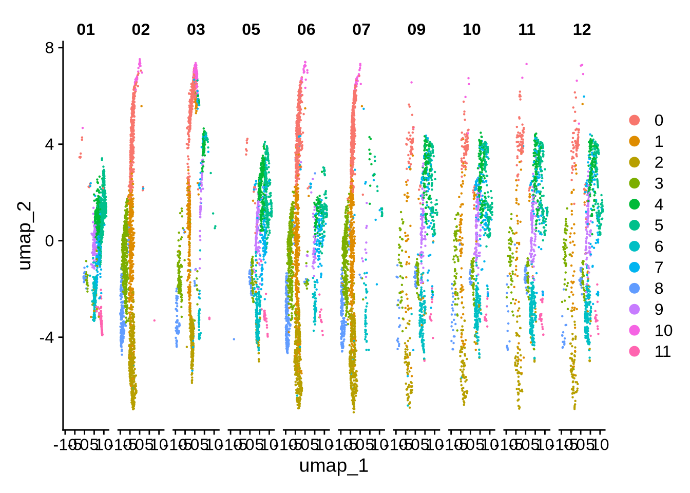
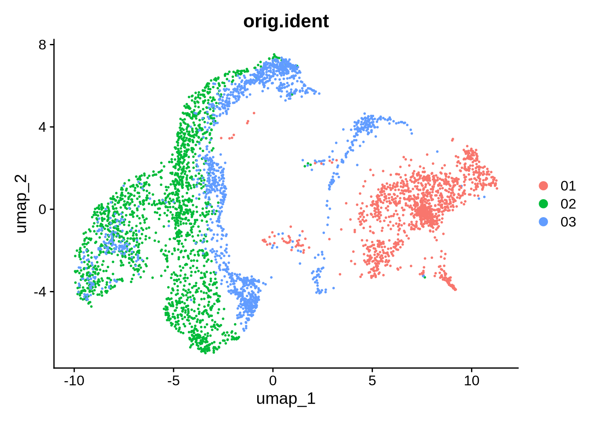
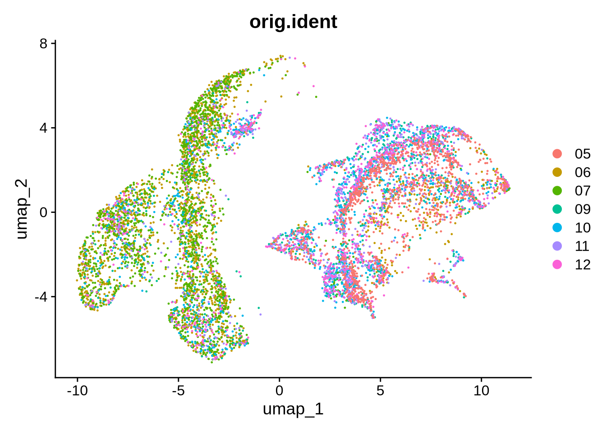
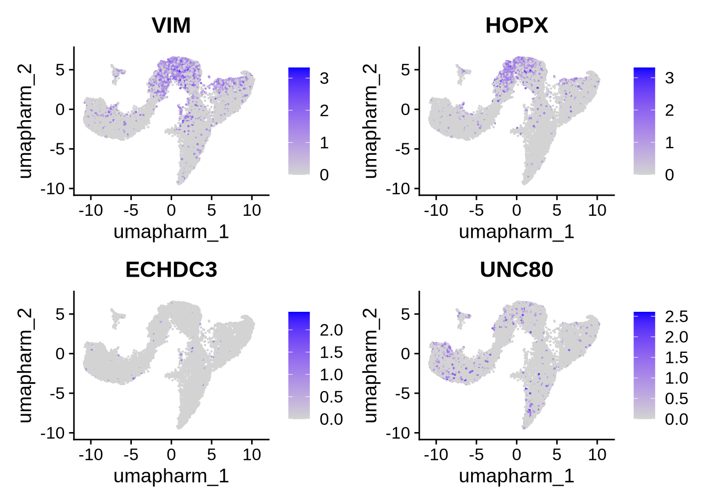

maria_int
2025-11-07
Chapter 1 Integrate based on well
merged_seurat_filt <- JoinLayers(object = merged_seurat_filt)
merged_seurat_filt[["RNA"]] <- split(merged_seurat_filt[["RNA"]], f = merged_seurat_filt$orig.ident)## Splitting 'counts', 'data' layers. Not splitting 'scale.data'. If you would like to split other layers, set in `layers` argument.#perform integration with Harmony
obj <- IntegrateLayers(object = merged_seurat_filt,
method = HarmonyIntegration,
orig.reduction = "pca",
new.reduction = 'integrated.harm',
verbose = FALSE,
)## Warning in harmony::HarmonyMatrix(data_mat = Embeddings(object = orig), :
## HarmonyMatrix is deprecated and will be removed in the future from the API in
## the futureobj <- FindNeighbors(obj, reduction="integrated.harm")## Computing nearest neighbor graph## Computing SNNobj <- FindClusters(obj, resolution=0.5, cluster.name="harm_cluster")## Modularity Optimizer version 1.3.0 by Ludo Waltman and Nees Jan van Eck
##
## Number of nodes: 13081
## Number of edges: 434056
##
## Running Louvain algorithm...
## Maximum modularity in 10 random starts: 0.8963
## Number of communities: 12
## Elapsed time: 1 secondsElbowPlot(obj, ndims = 50)
obj <- RunUMAP(obj, reduction="integrated.harm", dims=1:18, reduction.name = "umap.harm")## 17:27:42 UMAP embedding parameters a = 0.9922 b = 1.112## 17:27:42 Read 13081 rows and found 18 numeric columns## 17:27:42 Using Annoy for neighbor search, n_neighbors = 30## 17:27:42 Building Annoy index with metric = cosine, n_trees = 50## 0% 10 20 30 40 50 60 70 80 90 100%## [----|----|----|----|----|----|----|----|----|----|## **************************************************|
## 17:27:43 Writing NN index file to temp file /tmp/RtmpR6Xqqa/filebb80669c961e
## 17:27:43 Searching Annoy index using 1 thread, search_k = 3000
## 17:27:46 Annoy recall = 100%
## 17:27:46 Commencing smooth kNN distance calibration using 1 thread with target n_neighbors = 30
## 17:27:47 Initializing from normalized Laplacian + noise (using RSpectra)
## 17:27:47 Commencing optimization for 200 epochs, with 564568 positive edges
## 17:27:51 Optimization finishedDimPlot(obj, reduction = "umap.harm", group.by = c("orig.ident", "harm_cluster"), label = T) 
DimPlot(obj, split.by = "orig.ident")
# which cells belong to those samples?
cells_use <- WhichCells(
obj,
expression = orig.ident %in% c("01", "02",
"03", "04")
)
length(cells_use) # just to see how many you got## [1] 4626# UMAP showing only those cells
DimPlot(
obj,
reduction = "umap",
cells = cells_use,
group.by = "orig.ident"
)
# which cells belong to those samples?
cells_use <- WhichCells(
obj,
expression = orig.ident %in% c("05", "06",
"07", "08", "09", "10", "11", "12")
)
length(cells_use) # just to see how many you got## [1] 8455# UMAP showing only those cells
DimPlot(
obj,
reduction = "umap",
cells = cells_use,
group.by = "orig.ident"
)
FeaturePlot(obj, features = c("VIM","HOPX","ECHDC3","UNC80"), , reduction = "umap.harm")